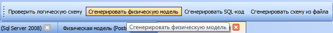
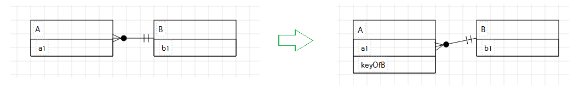
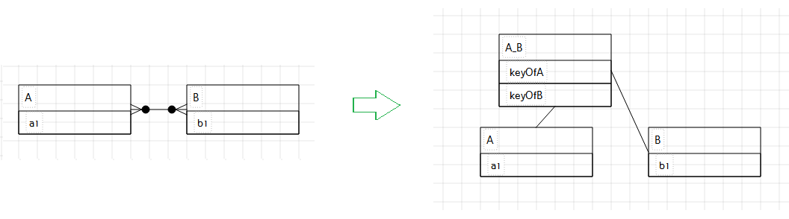
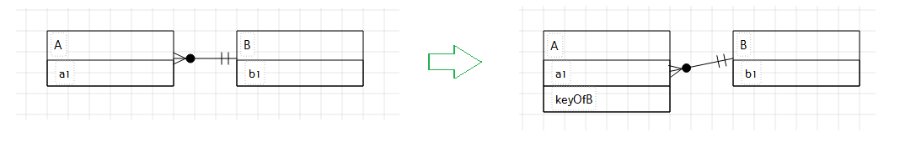
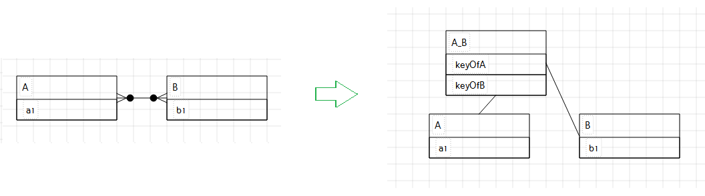
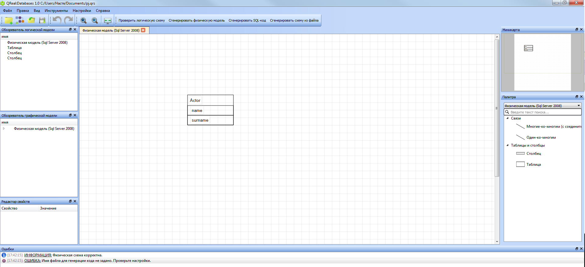
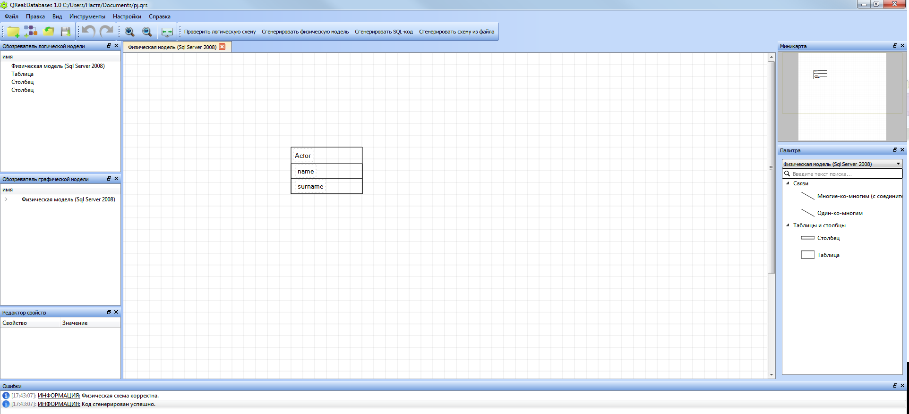
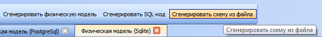

Логическую схему БД можно проверить на частичную корректность.
Запустить генерацию можно двумя способами: выбрать соответствующий пункт на панели инструментов или через
меню "Инструменты".
После нажатия на кнопку верификатор проверяет диаграммы проекта и выдаёт сообщения о всех найденных ошибках.
Если ошибок не было обнаружено, верификатор выведет сообщение том, что данная диаграмма или диаграммы корректны:
Верификатор включает в себя следующие проверки:
Непустота имени сущностей
Непустота имени и типа данных атрибутов
Наличие сущностей на концах у отношений
Наличие атрибутов у сущности
Запуск генерации
Из логической схемы БД можно сгенерировать физическую схему.
Для этого в настройках проекта необходимо указать имя желаемой СУБД (см. раздел Настройки).
Запустить генерацию можно двумя способами: выбрать соответсвующий пунк на панели инструментов или через меню "Инструменты".

При обнаружении ошибок информация о них появится в окне сообщений:
Если генерация пройдет успешно, создастся новая диаграмма с физической схемой и появится соответсвующее сообщение:
Логика генерации
При генерации физической модели к элементам логической модели добавляются свойства, которые можно менять в конкретной СУБД.
Так, например, свойство элемента "Таблица" "temp" не поддерживается #имясубд, но поддерживается в #имясубд2 (см. раздел).
Соответственно, если сгенерировать физическую модель для #имясубд2, то возможность редактировать это свойство будет, а если сгенерировать для #имясубд - нет.
Сущности и отношения превращаются при генерации в таблицы по следующим правилам:
1) Связь "один-к-одному" соединяет две сущности в одну таблицу.
 2) Связь "один-ко-многим" создает для каждой сущности отдельную таблицу и добавляет к сущности с концом "много" столбец с ключом второй сущности.

3) Связь "многие-ко-многим" создает для каждой сущности отдельную таблицу и новую таблицу, содержащую ключи связываемых сущностей.

4) Во всех остальных случаях сущность становится таблицей.
2) Связь "один-ко-многим" создает для каждой сущности отдельную таблицу и добавляет к сущности с концом "много" столбец с ключом второй сущности.

3) Связь "многие-ко-многим" создает для каждой сущности отдельную таблицу и новую таблицу, содержащую ключи связываемых сущностей.

4) Во всех остальных случаях сущность становится таблицей.
Запуск генерации
Из физической схемы можно сгенерировать SQL-скрипты, которые создают нарисованную БД.
Для этого в настройках проекта необходимо указать имя желаемой СУБД (см. раздел Настройки).
Запустить генерацию можно двумя способами: выбрать соответсвующий пунк на панели инструментов или через меню "Инструменты".
При обнаружении ошибок информация о них появится в окне сообщений:

Если генерация пройдет успешно, создастся новая диаграмма с физической схемой и появится соответсвующее сообщение:

Логика генерации
Для каждой таблицы генерируется скрипт CREATE TABLE, содержащий столбцы таблицы.
Указанные свойства таблицы и столбцов располагаются в скрипте на соответствующем месте.
Для СУБД Sqlite и Microsoft Access существует возможность обратного проектирования по файлу, содержащему БД.
Для запуска генерации необходимо выбрать соответствующий пункт меню.

Затем необходимо выбрать одну из СУБД и загрузить файл для обратного проектирования.
При обнаружении ошибок информация о них появится в окне сообщений:
 Если обратное проектировании совершено успешно, появится соответствующее сообщение:
Если обратное проектировании совершено успешно, появится соответствующее сообщение: